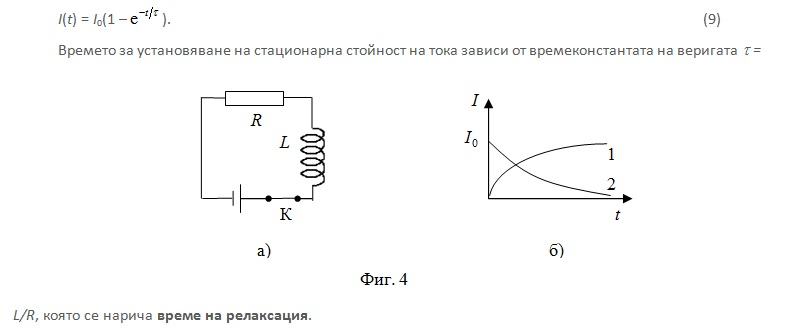

-
1.Самоиндукция и взаимна индукция
Явленията взаимна индукция и самоиндукция са частни случаи на явлението електромагнитна индукция. Те се изразяват във възникване на индуцирано електродвижещо напрежение в токов контур при изменение на големината на електричния ток в съседни токови контури или при изменение на собствения ток в контура.
-
1.1. Самоиндукция
Потокът на магнитната индукция ФВS в токов контур с ток I е пропорционален на големината на тока

При изменение на големината на тока се изменя потока на собственото магнитно поле и се самоиндуцира електродвижещо напрежение в контура ℰ is . Явлението се нарича самоиндукция, а самоиндуцираният ток се нарича екстраток.
Коефициентът на пропорционалност L се нарича индуктивност на контура. Индуктивността се измерва в хенри (Н). Нейната стойност е 1 Н, ако при изменение на големината на тока с един ампер за секунда, в контура се индуцира ЕДН един волт.
-
1.2. Взаимна индукция
Ако в затворените контури 1 и 2 (фиг. 1) протичат токове I1 и I2, всеки от тях създава
магнитно поле с индукция съответно B1 и B2 . Потокът на магнитната индукция през контура “2”, дължащ се на тока в първия контур, е пропорционален на големината на тока I1

Потокът на магнитната индукция през контура 1, дължащ се на тока във втория контур, е пропорционален на големината на тока I2
Коефициентите М12 и М21 се наричат коефициенти на взаимна индуктивност. Те зависят от формата, размерите и взаимното разположение на двата контура и от магнитните свойства на средата, в която се намират.
Явлението взаимна индукция се състои в това, че изменението на големината на тока във всеки от контурите предизвиква изменения на потока на магнитната индукция в съседния контур и предизвиква появата на индуциран електричен ток. Изменение на ФВ1 и ФВ2 може да бъде предизвикано и вследствие на изменение на взаимната индуктивност на двата контура. Следователно за индуцираното електродвижещо напрежение в двата контура са в сила равенствата -
Измерителната единица за взаимна индуктивност е хенри (H). Един хенри е взаимната индуктивност на два проводника, когато в единия от тях възниква индуцирано електродвижещо напрежение един волт при промяна на големината на тока в другия проводник с един ампер за една секунда.
Явлението взаимна индукция е в основата на работата на трансформаторите за преобразуване на напрежението и големината на променливия ток (фиг. 2). Трансформаторът се състои от магнитопровод от магнитно мек феромагнетик и две намотки – първична (N1) и вторична (N2). В първичната намотка (вход на трансформатора) протича променлив ток, а вторичната намотка (изход на трансформатора) е включена към потребителя на електрична енергия. -
Магнитният поток на първичната намотка е затворен в магнитната верига. Електродвижещото напрежение, индуцирано във вторичната намотка от промените на магнитния поток в магнитната верига, е пропорционално на броя на нейните навивки и на скоростта на изменение на магнитния поток, респ. на честотата на електричния ток в първичната намотка.
В някои случаи, като вторична намотка се използва част от първичната намотка – автотрансформатор. Един от контактите му е подвижен, за да се изменя плавно изходното напрежение.
Друго приложение на явлението взаимна индукция е зареждането на батериите на различни промишлени и битови прибори. Много домакински прибори работят с батерии и не се включват към електрическата мрежа по време на работа. Когато не работят, те се намират в поставка, включена към мрежата, в намотката на която протича променлив ток и която обхваща подобна намотка в прибора. Взаимната индукция между двете намотки и променливото магнитно поле в поставката са причина в намотката на прибора да протича ток, който зарежда неговата батерия. -
2. Скин-ефект
Скин-ефектът е явление на неравномерно разпределение на плътността на електричния ток по сечението на масивни проводници, когато токът притежава висока честота. С увеличаване на диаметъра на проводника и на честотата на тока тази неравномерност се увеличава.
Причина за скин-ефекта са самоиндуцираните вихрови токове в обема, които и при нарастване (dI/dt > 0) (фиг. 3 а) и при намаляване (dI/dt < 0) (фиг. 3 б) на основния ток, се появяват поради изменение на собственото му магнитно поле. -
Съгласно правилото на Ленц посоката на индуцираните токове съвпада с посоката на изменение на основния ток на повърхността на проводника, а във вътрешността му те имат противоположна посока. Затова при високи честоти токът тече само по повърхността на проводника. Тогава вътрешните части на проводниците се оказват безполезни и те се изработват във вид на тръби, покрити с тънък слой сребро за увеличаване на проводимостта.
-
3. Токове при включване и изключване
Ако във веригата от фиг. 4 а се включи ключа К, електричният ток в нея достига стационарната си стойност I0 = E/R не мигновено, а след определено време. То зависи от стойностите на индуктивността L и съпротивлението R. Причина за това е възникването на самоиндуцирано електродвижещо напрежение ℰi = –L(dI/dt), което противодейства на измененията на основния ток във веригата съгласно правилото на Ленц. Големината на тока се изменя по закона (фиг. 4 б - крива 1)

При изключване токът през бобината намалява и се самоиндуцира електродвижещо напрежение, което подържа основния ток. То се противопоставя на намалението му и големината на тока във веригата не намалява мигновено до нула, а съгласно закона (фиг. 4 б – крива 2)
-
4. Енергия на магнитното поле
-
© ROGACHEV